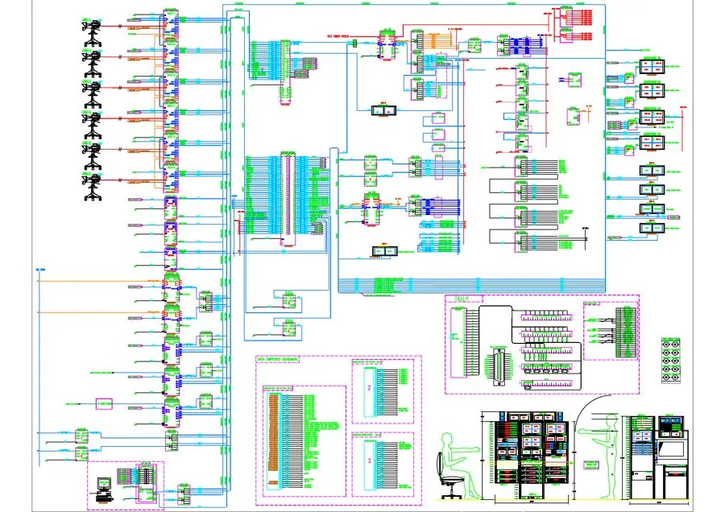

OB Van · HD
HD Outside Broadcast Van
Complete video and audio system design for a six-camera OB van.
- 6 cameras with CCUs and fiber connectivity
- Routing matrix, vision mixer and multiviewers
- Tally system and data switches
- Rack layout and operator ergonomics